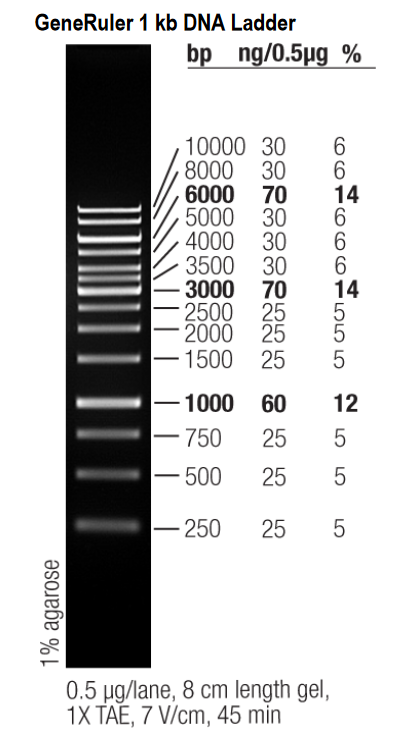

Gel Electrophoresis
Protocol (adapted from Lotterhos Lab)
You can make either a 1% or 2% agarose gel. We have been using 2% gels because they tend to give better/clearer results.
Materials
Agarose (chemical shelf)
1X TAE (reagent shelf)
Scoop (near sink)
Erlenmeyer flask (glassware cabinet)
Stir bar (drawer under stir plate)
Gel rig and combs (gel room)
Weigh boat
Parafilm
1kb Plus ladder (-20 freezer)
TriTrack loading dye (-20 freezer)
DI water
MilliQ water (OGL)
P2.5 and P10 pipettes
Insulated box with ice
Equipment
Magnetic stir plate (left of the -80 fridge)
Microwave (gel room)
Power supply- PowerEase™ Touch 120W Power Supply (115 VAC) or Hoefer PS300-B (in gel room)
- PowerEase™ Touch 120W Power Supply (115 VAC) User Manual
Gel Doc for imaging (in OGL)
Protocol Beginning
Ensure you have correctly diluted 1X TAE Buffer. To make 1X from 50X TAE, pour 20mL 10X TAE in the large plastic graduated cyliner. Add 980mL MilliQ water until the mixture reaches the 1000mL mark. Pour and store in a 1L labelled glass bottle.
Mix the gel components.
- For a 1% agarose gel:
- Small gel: 0.60g agarose + 60 mL 1X TAE Buffer
- Medium gel: 1 g agarose + 100 mL 1X TAE Buffer
- For a 2% agarose gel (what we usually use):
- Small gel: 1.2g agarose + 60 mL 1X TAE Buffer
- Medium gel: 2g agarose + 100 mL 1X TAE Buffer
- Weigh agarose using a plastic small weigh boat. Pour into Erlenmeyer flask. Measure 1X TAE using an 100mL graduated cyliner. Pour into Erlenmeyer flask and swirl gently.
- Use the magnetic stirring plate (put a stir bar inside the Erlenmeyer flask) to mix. Turn the RPM into the 500s until all the clumps are gone. Remove the stir bar using the magnetic pull from another stir bar. Sterilize before putting back.
- For a 1% agarose gel:
Melt the gel.
- Microwave the flask with agarose mixture for ~30 seconds.
- Always watch for boiling. If mixture begins to bubble, remove it immediately and carefully swirl until bubbles are gone.
- With hot mitt, remove the flask from microwave and gently swirl.
- Be careful—it will be hot! Hold the flask away from you and gently swirl to avoid splashing.
- Return the flask to microwave and continue heating for another 30-40 seconds until mixture is clear and there are no agarose particles.
- Microwave the flask with agarose mixture for ~30 seconds.
Allow to cool.
- Gently swirl while cooling. The solution should be cool enough to hold in the palm of your hand. This can take a couple minutes, please be patient.
Add GelRed:
- Small gel: 6ul.
- Medium gel: 10 uL
- GelRed can be found in the drawer labeled “Gatins GelRed” in the shared wet lab/gel room.
- Gently swirl until the stain is dissolved (you should not be able to see any red stain in the gel).
GelRed is light sentsitive, dont keep it out for long! It tends to form a bubble on top. Pop it with a seperate pipette tip before pipetting to ensure it doesn’t get all over the pipette.
- Pour the gel.
- Place gel tray in empty gel rig (dry, no TAE). Flip its orientation so it in confined (SEE IMAGE BELOW). Wet the red rubber gaskets of tray before placing in rig so it will be easier to take out later.

b. Pour gel slowly to avoid bubbles.
i. If bubbles form, you can pop them using a pipette tip.
ii. Make sure gel is poured evenly.
c. Add casting combs into the slots.
i. Allow enough room between combs for DNA to run down.
ii. There are 2 pairs of combs for each size gel; one will create wider wells than the other. You can use either set of combs.
d. Rinse out the flask and hang on drying rack in Gatins lab.Let the gel set for ~40 minutes.
- The gel should be solid, cool to the touch, and opaque.
- Once gel is set, remove the combs.
- Remove combs slowly, pulling straight up. It might be easier to do this if the gel is in the buffer.
Make sure that the power source is off, and the gel rig is unplugged from the power source before removing the top.
Place the tray with your gel in the gel rig with wells on the side with the black plug
- Samples will run from the black side toward red side.
- DNA “runs to red”

Fill rig with enough 1X TAE Buffer to just cover the entire gel.
- The rig doesn’t need to be filled all the way to the line, just enough to cover the gel.
Right before taking your 3ul of DNA, make sure to vortex the sample to ensure DNA is evenly dispersed throughout the tube. Forgetting to vortex can result in gels where no band is visible, or super streaky, as DNA may be stuck on the bottom of the sample well rather than suspended in the buffer.
- Create ladder and DNA dye/sample solutions to load.
- Thaw DNA, ladder, and TriTrack loading dye. Keep on ice once thawed.
- Cut a piece of parafilm and tape to blue tray, waxy side up. Label where samples will go.
- Create ladder following table below. Vortex and centrifuge ladder before using.
Makes enough for 2 laddersLadder Loading Dye DI H2O 1 uL 1 uL 4 uL - Pipette the 1ul ladder, 1ul TriTrack loading dye, and 4ul DI H20 per 2 ladders onto parafilm.
- Pipette up and down to mix.
- Create DNA dye/sample solutions following table below.
DNA Loading Dye 3 uL 1 uL - Pipette the 1uL loading dye onto parafilm for each sample.
- Using filtered tips pipette DNA up and down when pipetting out. Pipette the 3 uL DNA onto parafilm.
- Pipette DNA and loading dye up and down on parafilm to mix.

- Load Gel
- Pipette 3 ul of the dye/sample solution into the proper well of the gel.
- Repeat for each sample. Change your pipette tip for each sample.
- Keep track of which samples are where!
When pipetting into gel wells, be careful not to break the agarose or stick the pipette tip too far into the well so that the sample ejects into the agarose. Position your pipette tip just inside the well and check for dye in the correct well after you pipette it. Check to see if the agarose around the well breaks. Take a note if the agarose breaks around a well.
- Run the gel.
- Put the gel box cover into place.
- Make sure the wires are plugged in correctly (wire colors match plug colors).
- Turn on the power supply and set timer. For a 1% gel, set it for 130V for 30 minutes. For a 2% gel, we found that 90V for 35 minutes works better.
- Check for bubbles rising at cathode (black plug) side to ensure the rig is working. If you do not see bubbles rising, the gel is not running.
- When the gel is done running, turn the off power.
- Never open the rig when the power is on.
- Put the gel box cover into place.
The power supply can output 300 V at maximum. Never run a protocol that maxes out the voltage.
You can safely run up to 4 small gels or 2 medium gels at most simultaneously on the power supply. Do not run more gels than the machine can handle, or it may break the machine.
Never connect/disconnect cords from the power supply’s power jacks while the blue indicator light is on or when the screen says “Running.”
Make sure area around the power supply is dry and clean
Wait 5 seconds after ending a run before handling the cords/output leads/gel rig.
For proper ventilation, leave at least 10 cm of space behind the instrument, and at least 5 cm of space on each side.
Information based on Appendix D of the safety manual
Visualize the gel.
Turn the power supply off.
Remove the cover from the gel box.
Carefully remove the tray and gel.
- Try to drip excess buffer back into the rig, scraping the bottom of the tray on the edge of the box.
The gel doc (for visualizing the gel) is in OGL, in the room you walk through right before the autoclave room. The gel doc is a large grey machine on the benchtop next to a black computer. Open the gel doc tray and wipe it clean using MilliQ water and KimWipes.
- A small volume of water (<10ml) is sufficient.
Slide the gel onto the gel doc tray. You can also keep the gel in its plastic tray and put the whole thing on the gel doc.
- Do so slowly to avoid creating bubbles under the gel.
- If you’re unsure if your gel has run long enough, you can leave gel in tray and visualize it. You can then return the gel to the rig and run it for longer if necessary.
Close the tray.
Open “Image Lab” application on the OGL laptop connected to the gel doc.
Check that the cord labeled “Gel doc” is plugged into the computer.
Select New Protocol.
Under “Application”, select Nucleic Acid Gels and then GelRed.
- The default setting is to optimize for most intense bands which prevents the gel from being over exposed but may make very faint samples undetectable.
- If necessary, under “Image Exposure” you can select exposure to optimize for faintest bands or set a manual exposure time.
- If you are running a gel with samples of highly variable concentrations, it may be useful to run protocols with each optimization option.
Select “Position Gel” (yellow button on the left side of the window).
- The program will ask you to check that the filter is set to Filter 1.
- Check that the arm on the upper right side of the gel doc is in the center position labeled Filter 1.
Open door on the front of the gel doc and position your gel.
- You can zoom in and out under image window on the computer screen.
- You can enable grid lines by checking the box in the bottom corner of the screen.
Close door and select “Run Protocol” (green button on the left side of the window).
Wait for the gel image to load.
Save image or change protocol and run again.
To save as .jpg image:
- Select File>Export>Export for Publication>Select Export.
- Change file type to .jpg.
- Name file and save in appropriate folder. We have a Lotterhos folder on the OGL laptop.
Always clean the gel doc tray after use. You can use MilliQ water from the squirt bottle near the gel doc and a Kimwipe to clean the tray of any remaining gel or TAE. Make sure the tray is dry before you leave.
Dispose of the gel in mayo jar. Be sure to label mayo jar with GelRed and Bromophenol blue.
Rinse gel tray and let dry on drying rack above the sink in the gel room.
Interpret your gel.
First, ensure your ladder ran cleanly. You want to see relatively straight and separated lines. Some will have higher feedback when imaging.
Use the ladder to determine the size in basepairs of your DNA samples.
Thermo Fisher GeneRuler 1 kb Ladder, 250-10,000 kbp (ladder we have in the lab)

- As shown in the image above, the ladder has 14 distinct bands representing strands of 250 bp at the lowest band to 10,000 bp at the topmost band. What matters most for genomic DNA to be sent for sequencing is ensuring your DNA strands are long enough (> 3,000 bp) to indicate a successful extraction.
Example Gel

2% agarose gel with ladders in the rightmost and leftmost wells, a blank in the second well from the right, and three oyster genomic DNA samples in the remaining wells. This is using a different ladder than the one we have.
Both ladders ran nicely. The bands are mostly spaced out with minimal streaking.
- Note the clustered bands in the ladders for 3,000-20,000 bp
The second well, a blank, contains nothing beyond loading dye. As there was no sample running there, the image shows no DNA present, which is as it should be.
Samples 1 and 2 ran properly- each has a clear distinct line placing them between 3,000-20,000 bp in length (appropriate for genomic DNA). These samples appear to be in a good state for sequencing.
Sample 3, on the other hand, is streaky, indicating that the DNA likely degraded during the electrophoresis process. There is one bright band up near the top in the 3,000-20,000 bp range, which is good, but this sample probably isn’t in the best shape for sequencing.
Troubleshooting
Agarose Percentages
Wavy Sample or Ladder Bands
When removing the combs from a set gel, remove very gently and pull them straight up and out to keep pieces of gel from getting loosened and knocked into the well.
Make sure not to touch the sides of the wells with the pipette tip when adding samples in.
E1 Error on Voltage Machine
The voltage machine may give an “E1” error and will not begin running. When this happens, check that there is enough TAE buffer in the rig such that the ends of the electrodes are submerged. Add more 1X TAE if not.
Also check that electrodes are tightened on each side. The red one on rig 2 tends to get a bit loose.
Streaky Samples
- Your sample may have degraded. Be careful not to leave DNA samples in the fridge for more than 4 or 5 days and try not to thaw and refreeze samples too many times.